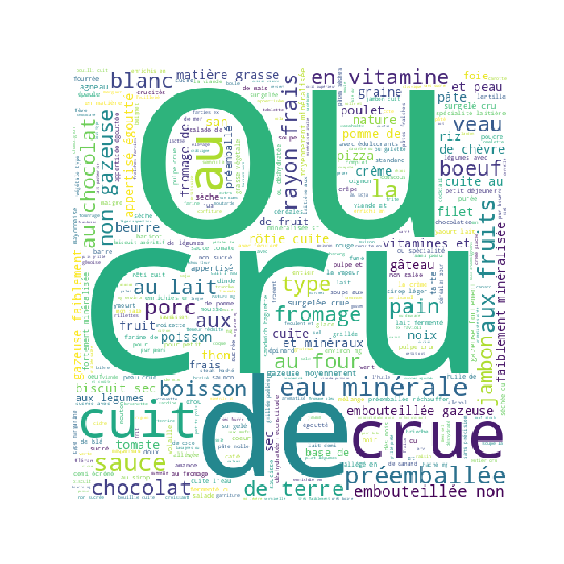

Exploratory Data Analysis
<< Go back
Feature : target
- Feature type : continous
- Missing : 0.0%
- Unique : 214
- Count :1859.0
- Mean :2.8113286713286714
- Std :0.5395441295180835
- Min :1.6
- 25%th Percentile : 2.43
- 50%th Percentile : 2.77
- 75%th Percentile : 3.11
- Max :4.83

Feature : Groupe d'aliment
- Feature type : categorical
- Missing : 0.0%
- Unique : 11
- Count :1859
- Unique :11
- Top :viandes, œufs, poissons
- Freq :464

Feature : Sous-groupe d'aliment
- Feature type : categorical
- Missing : 0.0%
- Unique : 58
- Count :1859
- Unique :58
- Top :légumes
- Freq :146

Feature : Nom du Produit en Français
- Feature type : text
- Missing : 0.0%
- Unique : 1859
- Count :1859
- Unique :1859
- Top :Maquereau, filet sauce moutarde, appertisé, égoutté
- Freq :1

Feature : LCI Name
- Feature type : text
- Missing : 0.0%
- Unique : 1858
- Count :1859
- Unique :1858
- Top :Wafer cookie
- Freq :2
Feature : Saisonnalité
- Feature type : categorical
- Missing : 0.0%
- Unique : 3
- Count :1859
- Unique :3
- Top :mix de consommation FR
- Freq :1855
Feature : Transport par avion (1 : par avion)
- Feature type : discrete
- Missing : 0.0%
- Unique : 2
- Count :1859.0
- Mean :0.0005379236148466917
- Std :0.02319318035213566
- Min :0.0
- 25%th Percentile : 0.0
- 50%th Percentile : 0.0
- 75%th Percentile : 0.0
- Max :1.0
Feature : Livraison
- Feature type : categorical
- Missing : 0.0%
- Unique : 5
- Count :1859
- Unique :5
- Top :Glacé
- Freq :1003
Feature : Matériau d'emballage
- Feature type : categorical
- Missing : 0.0%
- Unique : 19
- Count :1859
- Unique :19
- Top :PS
- Freq :388
Feature : Préparation
- Feature type : categorical
- Missing : 0.0%
- Unique : 11
- Count :1859
- Unique :11
- Top :Pas de préparation
- Freq :1072

Feature : Score unique EF (mPt/kg de produit)
- Feature type : continous
- Missing : 0.0%
- Unique : 1024
- Count :1859.0
- Mean :0.7057219672389456
- Std :0.887612606302758
- Min :0.006130241099999999
- 25%th Percentile : 0.16882872999999998
- 50%th Percentile : 0.3796399
- 75%th Percentile : 0.86286023
- Max :6.0857682
Feature : Changement climatique (kg CO2 eq/kg de produit)
- Feature type : continous
- Missing : 0.0%
- Unique : 1024
- Count :1859.0
- Mean :5.886012626979021
- Std :9.216624735065963
- Min :0.021046612000000003
- 25%th Percentile : 1.0807981
- 50%th Percentile : 2.6346488999999997
- 75%th Percentile : 6.3282902
- Max :62.729303
Feature : Appauvrissement de la couche d'ozone (E-06 kg CVC11 eq/kg de produit)
- Feature type : continous
- Missing : 0.0%
- Unique : 1025
- Count :1859.0
- Mean :0.5998519789409361
- Std :5.6626198694896575
- Min :0.008919305800000001
- 25%th Percentile : 0.16096224
- 50%th Percentile : 0.25995514000000003
- 75%th Percentile : 0.541807165
- Max :243.44932999999997
Feature : Rayonnements ionisants (kBq U-235 eq/kg de produit)
- Feature type : continous
- Missing : 0.0%
- Unique : 1032
- Count :1859.0
- Mean :1.2430172204744485
- Std :1.9125493623046503
- Min :0.081033574
- 25%th Percentile : 0.46878608499999996
- 50%th Percentile : 0.8130866
- 75%th Percentile : 1.3448674500000002
- Max :33.548897
Feature : Formation photochimique d'ozone (E-03 kg NMVOC eq/kg de produit)
- Feature type : continous
- Missing : 0.0%
- Unique : 1025
- Count :1859.0
- Mean :21.15691655823023
- Std :42.12155943359328
- Min :0.061075725
- 25%th Percentile : 3.6102189
- 50%th Percentile : 7.733448200000001
- 75%th Percentile : 18.3088395
- Max :328.58861
Feature : Particules (E-06 disease inc./kg de produit)
- Feature type : continous
- Missing : 0.0%
- Unique : 1024
- Count :1859.0
- Mean :0.5710819007247983
- Std :0.8988995118386985
- Min :0.0014343386999999999
- 25%th Percentile : 0.081238539
- 50%th Percentile : 0.23722045
- 75%th Percentile : 0.67341063
- Max :6.372366
Feature : Acidification terrestre et eaux douces (mol H+ eq/kg de produit)
- Feature type : continous
- Missing : 0.0%
- Unique : 1025
- Count :1859.0
- Mean :0.0812363584923615
- Std :0.13327089737820072
- Min :0.00011195104999999999
- 25%th Percentile : 0.00934169655
- 50%th Percentile : 0.033239674
- 75%th Percentile : 0.0878657225
- Max :0.94577275
Feature : Eutrophisation terreste (mol N eq/kg de produit)
- Feature type : continous
- Missing : 0.0%
- Unique : 1024
- Count :1859.0
- Mean :0.31954935797394296
- Std :0.5626632336862011
- Min :0.00025722718
- 25%th Percentile : 0.032433203
- 50%th Percentile : 0.11768465
- 75%th Percentile : 0.3165338
- Max :4.1982737
Feature : Eutrophisation eaux douces (E-03 kg P eq/kg de produit)
- Feature type : continous
- Missing : 0.0%
- Unique : 1025
- Count :1859.0
- Mean :0.9696703415696611
- Std :2.409962558379105
- Min :0.0091508965
- 25%th Percentile : 0.2306631
- 50%th Percentile : 0.55363064
- 75%th Percentile : 1.0704137
- Max :28.321094
Feature : Eutrophisation marine (E-03 kg N eq/kg de produit)
- Feature type : continous
- Missing : 0.0%
- Unique : 1025
- Count :1859.0
- Mean :28.755172303655726
- Std :53.426861540242086
- Min :0.029340733
- 25%th Percentile : 4.7734426999999995
- 50%th Percentile : 13.003172
- 75%th Percentile : 27.858909000000004
- Max :668.3395899999998
Feature : Utilisation du sol (Pt/kg de produit)
- Feature type : continous
- Missing : 0.0%
- Unique : 1024
- Count :1859.0
- Mean :311.8029856509091
- Std :684.0258385947157
- Min :-125.33747
- 25%th Percentile : 26.9771315
- 50%th Percentile : 108.36556999999999
- 75%th Percentile : 258.631395
- Max :5537.6867
Feature : Écotoxicité pour écosystèmes aquatiques d'eau douce (CTUe/kg de produit)
- Feature type : continous
- Missing : 0.0%
- Unique : 1025
- Count :1859.0
- Mean :108.83220243824638
- Std :139.82876322593663
- Min :1.2468278999999998
- 25%th Percentile : 31.5600065
- 50%th Percentile : 71.09155600000001
- 75%th Percentile : 134.9999
- Max :2956.2833
Feature : Épuisement des ressources eau (m3 depriv./kg de produit)
- Feature type : continous
- Missing : 0.0%
- Unique : 1025
- Count :1859.0
- Mean :5.398164497908553
- Std :12.848502674289882
- Min :-15.066491000000001
- 25%th Percentile : 1.1730795
- 50%th Percentile : 2.6241868
- 75%th Percentile : 5.5403847
- Max :274.33218999999997
Feature : Épuisement des ressources énergétiques (MJ/kg de produit)
- Feature type : continous
- Missing : 0.0%
- Unique : 1024
- Count :1859.0
- Mean :53.291119500215174
- Std :56.8722164028646
- Min :2.0298265
- 25%th Percentile : 23.224489
- 50%th Percentile : 34.659384
- 75%th Percentile : 62.860752000000005
- Max :752.4941200000001
Feature : Épuisement des ressources minéraux (E-06 kg Sb eq/kg de produit)
- Feature type : continous
- Missing : 0.0%
- Unique : 1025
- Count :1859.0
- Mean :8.782622543270577
- Std :17.143827915758898
- Min :0.10825636
- 25%th Percentile : 2.6424077500000003
- 50%th Percentile : 5.0208833
- 75%th Percentile : 10.082564
- Max :258.65773
.png)
<< Go back